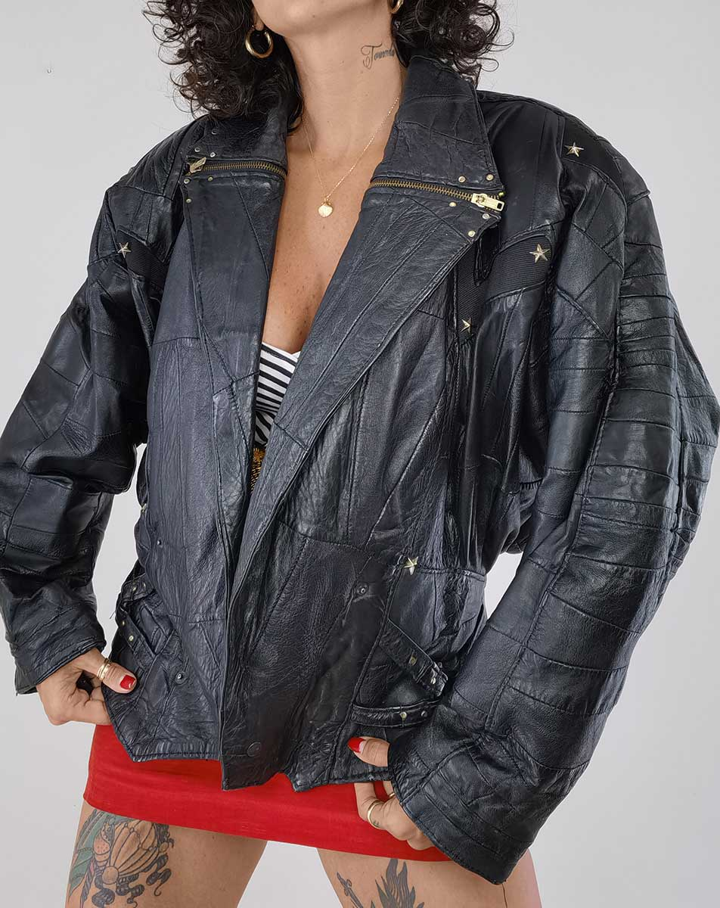
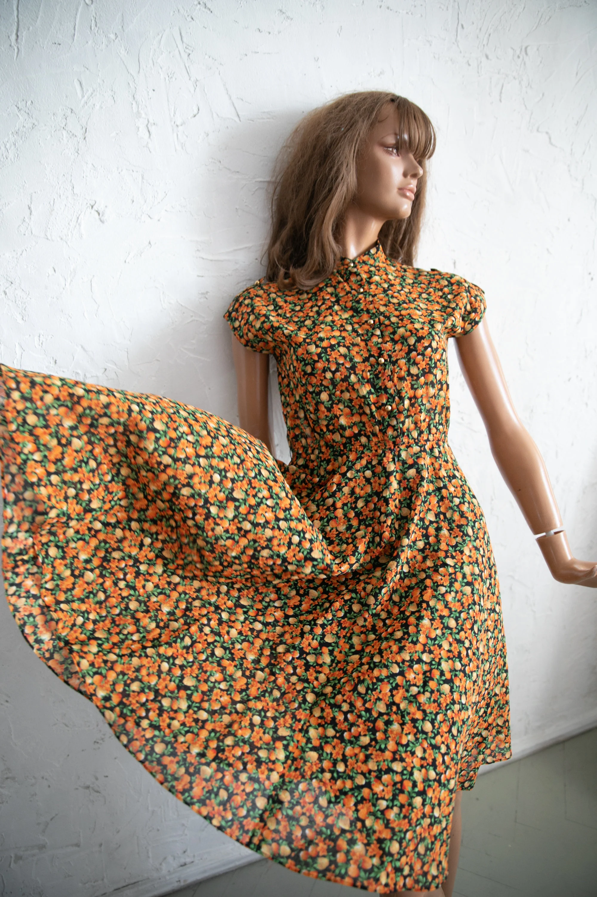
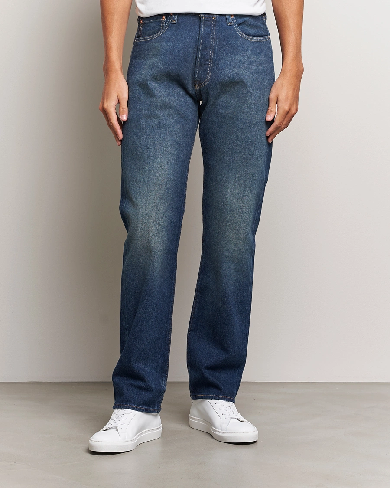
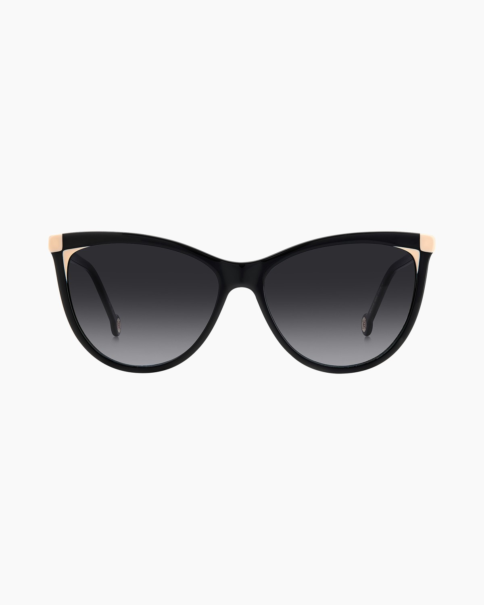
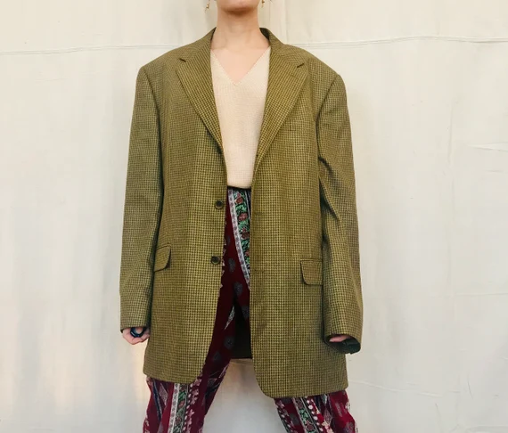
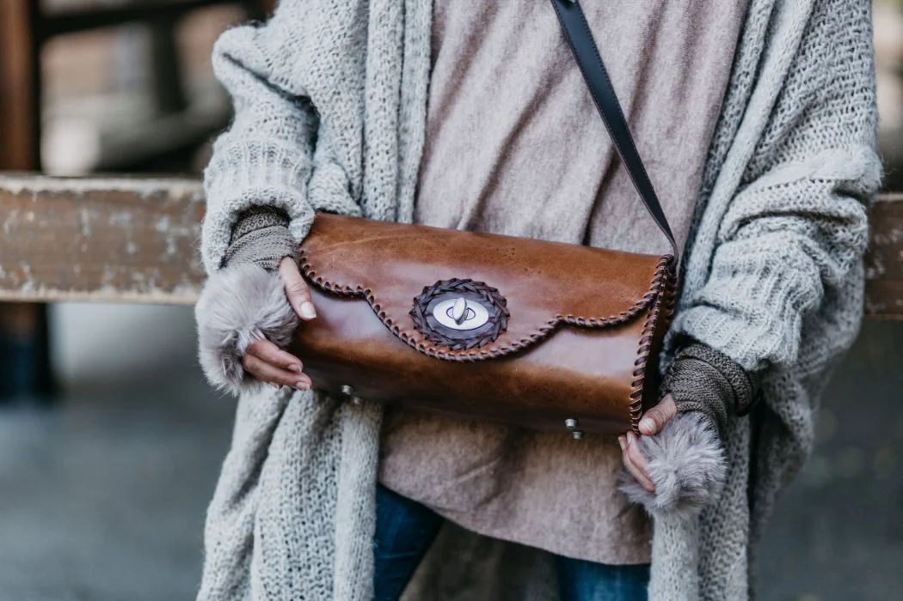
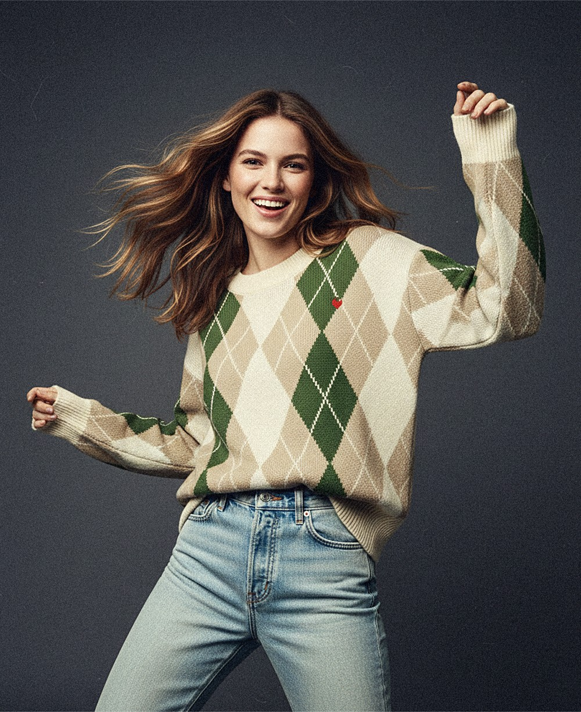

Moda Vintage
Samantha Green

Samantha Green

Icono Rock / Vintage Store

Laura Ashley / Retro Style

Estilo Preppy / Paris Chic

Levi Strauss & Co.

Estilo años 50 / Audrey Look

Minimalismo años 90

Taller Vintage / 1960s

Estilo Heritage / Old School
Burberrys / London Fog

Versace Style / 80s Glam